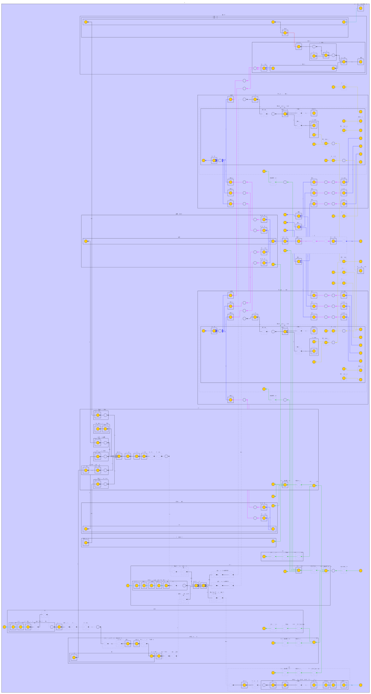

分析 Rocket Chip 中 Diplomacy 系统¶
背景¶
Rocket Chip 大量使用了 Diplomacy 系统来组织它的总线、中断和时钟网络。因此，如果想要对 Rocket Chip 进行定制，那么必须要对 Rocket Chip 中 Diplomacy 系统的使用有充分的了解，而这方面的文档比较欠缺。本文是对 Rocket Chip 中 Diplomacy 系统的使用的分析。阅读本文前，建议阅读先前的 分析 Diplomacy 系统 文章，对 Diplomacy 系统的设计和内部实现获得一定的了解。
Rocket Chip 总线结构概要¶
Rocket Chip 主要有以下几个总线：
- sbus: System Bus
- mbus: Memory Bus
- cbus: Control Bus
- pbus: Periphery Bus
- fbus: Frontend Bus
图示可以见参考文档中的链接，不过链接中的结构和实际的有一些区别。目前的 Rocket Chip 的总线结构大致是这样：
主要是 pbus 的位置从连接 sbus 移动到了连接 cbus。
根据配置不同，总线结构也不同，例如在有 coh(coherence manager) 的时候，是：
深入分析 Rocket Chip 总线结构¶
下面是一个双核 Rocket Chip 的 GraphML 导出来用 yED 绘制的架构图：

接下来深入分析图中的各个连接关系以及对应的代码。
TileLink 和 AXI 总线¶
这个图比较复杂，混合了多个 Diplomacy 网络，首先是总线的部分，包括 TileLink 和 AXI：
- 两个 Tile，对应一个双核的系统；每个 Tile 内部有一个 dcache 和 icache，连接到一个 tlMasterXbar 上，再通过 coupler_from_rockettile 连接到 fixer 再到 system_bus_xbar
- 从 system_bus_xbar 分出来三路 Slave：
- 第一路是 cbus，通过 out_xbar，连接到多个 slave：debug，error device，plic，clint，l2 control，bootrom
- 第二路是 mmio，通过 tl2axi4，转成 AXI4 连接到外部的 MMIO 外设
- 第三路是 coh，连接到 InclusiveCache，再连接到 mbus，通过 tl2axi4，转成 AXI4 连接到外部的内存
- system_bus_xbar 除了每个 tile 对应一个 master 以外，还有一个 master：fbus，它从外部的 AXI4 进来，通过 axi42tl 转换，接到 fbus，提供一个有缓存一致性的 AXI 访问接口，用于 DMA
简化后的结构如图：
flowchart TD
subgraph tile0
dcache0[dcache]
icache0[icache]
tlMasterXbar0[tlMasterXbar]
dcache0 --> tlMasterXbar0
icache0 --> tlMasterXbar0
end
subgraph tile1
dcache1[dcache]
icache1[icache]
tlMasterXbar1[tlMasterXbar]
dcache1 --> tlMasterXbar1
icache1 --> tlMasterXbar1
end
sbus
tlMasterXbar0 --> sbus
tlMasterXbar1 --> sbus
axi_fbus --> axi42tl --> fbus --> sbus
sbus --> cbus --> out_xbar
out_xbar --> debug
out_xbar --> error
out_xbar --> plit
out_xbar --> clint
out_xbar --> l2_ctrl
out_xbar --> bootrom
cbus --> pbus
sbus --> tl2axi4_mmio[tl2axi4] --> axi_mmio
sbus --> coh --> mbus --> tl2axi4_mem[tl2axi4] --> axi_mem那么这些连接关系在代码中是怎么搭建的呢：
-
首先是 tile 内部，dcache 和 icache 分别通过一个 widget 连到一个 tlMasterXbar 上：
2. 其次是每个 tile 的 tlMasterXbar 连接到 coupler_from_rockettile，再连到 sbus(system_bus_xbar)class Frontend(val icacheParams: ICacheParams, tileId: Int)(implicit p: Parameters) extends LazyModule { lazy val module = new FrontendModule(this) // icache resides in frontend val icache = LazyModule(new ICache(icacheParams, tileId)) val masterNode = icache.masterNode val slaveNode = icache.slaveNode val resetVectorSinkNode = BundleBridgeSink[UInt](Some(() => UInt(masterNode.edges.out.head.bundle.addressBits.W))) } trait HasICacheFrontend extends CanHavePTW { this: BaseTile => val frontend = LazyModule(new Frontend(tileParams.icache.get, tileId)) // tlMasterXbar.node <-- TLWidthWidget <-- frontend.masterNode(i.e. icache.masterNode) tlMasterXbar.node := TLWidthWidget(tileParams.icache.get.rowBits/8) := frontend.masterNode } trait HasHellaCache { this: BaseTile => lazy val dcache: HellaCache = LazyModule(p(BuildHellaCache)(this)(p)) tlMasterXbar.node := TLWidthWidget(tileParams.dcache.get.rowBits/8) := dcache.node }// in HasTiles.scala /** Connect the port where the tile is the master to a TileLink interconnect. */ def connectMasterPorts(domain: TilePRCIDomain[TileType], context: Attachable): Unit = { implicit val p = context.p // crossingParams.master.where defaults to SBUS, see below // so dataBus is system_bus_xbar val dataBus = context.locateTLBusWrapper(crossingParams.master.where) // coupler_from_rockettile (val baseName = "rockettile" in RocketTileParams) dataBus.coupleFrom(tileParams.baseName) { bus => // crossMasterPort is defined below bus :=* crossingParams.master.injectNode(context) :=* domain.crossMasterPort(crossingParams.crossingType) } } // in HierarchicalElementPRCIDomain.scala def crossMasterPort(crossingType: ClockCrossingType): TLOutwardNode = { val tlMasterResetXing = this { DisableMonitors { implicit p => element { element.makeMasterBoundaryBuffers(crossingType) } :=* // masterNode is defined below element_reset_domain.crossTLOut(element.masterNode) } } val tlMasterClockXing = this.crossOut(tlMasterResetXing) tlMasterClockXing(crossingType) } // in RocketTile.scala tlOtherMastersNode := tlMasterXbar.node masterNode :=* tlOtherMastersNode // crossingParams defaults to RocketCrossingParams() // in RocketSubsystem.scala case class RocketCrossingParams( crossingType: ClockCrossingType = SynchronousCrossing(), master: HierarchicalElementPortParamsLike = HierarchicalElementMasterPortParams(), slave: HierarchicalElementSlavePortParams = HierarchicalElementSlavePortParams(), mmioBaseAddressPrefixWhere: TLBusWrapperLocation = CBUS, resetCrossingType: ResetCrossingType = NoResetCrossing(), forceSeparateClockReset: Boolean = false ) extends HierarchicalElementCrossingParamsLike // default crossingParams.master.where is SBUS(System Bus) case class HierarchicalElementMasterPortParams( buffers: Int = 0, cork: Option[Boolean] = None, where: TLBusWrapperLocation = SBUS ) extends HierarchicalElementPortParamsLike { def injectNode(context: Attachable)(implicit p: Parameters): TLNode = { (TLBuffer.chainNode(buffers) :=* cork.map { u => TLCacheCork(unsafe = u) } .getOrElse { TLTempNode() }) } } -
接着是 sbus 连接到 coh，coh 连接到 mbus：
// in BusTopology.scala /** Parameterization of a topology containing a banked coherence manager and a bus for attaching memory devices. */ case class CoherentBusTopologyParams( mbus: MemoryBusParams, coherence: BankedCoherenceParams, sbusToMbusXType: ClockCrossingType = NoCrossing, driveMBusClockFromSBus: Boolean = true ) extends TLBusWrapperTopology( // instantiate mbus and coherence manager instantiations = (if (coherence.nBanks == 0) Nil else List( (MBUS, mbus), (COH, CoherenceManagerWrapperParams(mbus.blockBytes, mbus.beatBytes, coherence.nBanks, COH.name)(coherence.coherenceManager)))), connections = if (coherence.nBanks == 0) Nil else List( // (master, slave, parameters) // coh := sbus (SBUS, COH, TLBusWrapperConnection(driveClockFromMaster = Some(true), nodeBinding = BIND_STAR)()), // mbus := coh (COH, MBUS, TLBusWrapperConnection.crossTo( xType = sbusToMbusXType, driveClockFromMaster = if (driveMBusClockFromSBus) Some(true) else None, nodeBinding = BIND_QUERY)) ) ) // in BusWrapper.scala class TLBusWrapperTopology( val instantiations: Seq[(Location[TLBusWrapper], TLBusWrapperInstantiationLike)], val connections: Seq[(Location[TLBusWrapper], Location[TLBusWrapper], TLBusWrapperConnectionLike)] ) extends CanInstantiateWithinContextThatHasTileLinkLocations with CanConnectWithinContextThatHasTileLinkLocations { def instantiate(context: HasTileLinkLocations)(implicit p: Parameters): Unit = { instantiations.foreach { case (loc, params) => context { params.instantiate(context, loc) } } } def connect(context: HasTileLinkLocations)(implicit p: Parameters): Unit = { connections.foreach { case (master, slave, params) => context { params.connect(context, master, slave) } } } } -
为了让 Rocket Chip 可以访问外部的 AXI MMIO 设备，在 sbus 下面添加了 tl 到 axi 的一条路径：
/** Adds a AXI4 port to the system intended to master an MMIO device bus */ trait CanHaveMasterAXI4MMIOPort { this: BaseSubsystem => private val mmioPortParamsOpt = p(ExtBus) private val portName = "mmio_port_axi4" private val device = new SimpleBus(portName.kebab, Nil) val mmioAXI4Node = AXI4SlaveNode( mmioPortParamsOpt.map(params => AXI4SlavePortParameters( slaves = Seq(AXI4SlaveParameters( address = AddressSet.misaligned(params.base, params.size), resources = device.ranges, executable = params.executable, supportsWrite = TransferSizes(1, params.maxXferBytes), supportsRead = TransferSizes(1, params.maxXferBytes))), beatBytes = params.beatBytes)).toSeq) // in BaseSubsystem.scala: // def viewpointBus: TLBusWrapper = tlBusWrapperLocationMap(p(TLManagerViewpointLocated(location))) // case class TLManagerViewpointLocated(where: HierarchicalLocation) extends Field[Location[TLBusWrapper]](SBUS) // so viewpointBus points to sbus by default mmioPortParamsOpt.map { params => viewpointBus.coupleTo(s"port_named_$portName") { (mmioAXI4Node := AXI4Buffer() := AXI4UserYanker() := AXI4Deinterleaver(viewpointBus.blockBytes) := AXI4IdIndexer(params.idBits) := TLToAXI4() := TLWidthWidget(viewpointBus.beatBytes) := _) } } val mmio_axi4 = InModuleBody { mmioAXI4Node.makeIOs() } } -
类似地，为了让 Rocket Chip 可以访问外部的 AXI Memory，在 mbus 下面添加了 tl 到 axi 的一条路径：
/** Adds a port to the system intended to master an AXI4 DRAM controller. */ trait CanHaveMasterAXI4MemPort { this: BaseSubsystem => private val memPortParamsOpt = p(ExtMem) private val portName = "axi4" private val device = new MemoryDevice private val idBits = memPortParamsOpt.map(_.master.idBits).getOrElse(1) private val mbus = tlBusWrapperLocationMap.get(MBUS).getOrElse(viewpointBus) val memAXI4Node = AXI4SlaveNode(memPortParamsOpt.map({ case MemoryPortParams(memPortParams, nMemoryChannels, _) => Seq.tabulate(nMemoryChannels) { channel => val base = AddressSet.misaligned(memPortParams.base, memPortParams.size) val filter = AddressSet(channel * mbus.blockBytes, ~((nMemoryChannels-1) * mbus.blockBytes)) AXI4SlavePortParameters( slaves = Seq(AXI4SlaveParameters( address = base.flatMap(_.intersect(filter)), resources = device.reg, regionType = RegionType.UNCACHED, // cacheable executable = true, supportsWrite = TransferSizes(1, mbus.blockBytes), supportsRead = TransferSizes(1, mbus.blockBytes), interleavedId = Some(0))), // slave does not interleave read responses beatBytes = memPortParams.beatBytes) } }).toList.flatten) for (i <- 0 until memAXI4Node.portParams.size) { val mem_bypass_xbar = mbus { TLXbar() } // Create an incoherent alias for the AXI4 memory memPortParamsOpt.foreach(memPortParams => { memPortParams.incohBase.foreach(incohBase => { val cohRegion = AddressSet(0, incohBase-1) val incohRegion = AddressSet(incohBase, incohBase-1) val replicator = tlBusWrapperLocationMap(p(TLManagerViewpointLocated(location))) { val replicator = LazyModule(new RegionReplicator(ReplicatedRegion(cohRegion, cohRegion.widen(incohBase)))) val prefixSource = BundleBridgeSource[UInt](() => UInt(1.W)) replicator.prefix := prefixSource // prefix is unused for TL uncached, so this is ok InModuleBody { prefixSource.bundle := 0.U(1.W) } replicator } viewpointBus.coupleTo(s"memory_controller_bypass_port_named_$portName") { (mbus.crossIn(mem_bypass_xbar)(ValName("bus_xing"))(p(SbusToMbusXTypeKey)) := TLWidthWidget(viewpointBus.beatBytes) := replicator.node := TLFilter(TLFilter.mSubtract(cohRegion)) := TLFilter(TLFilter.mResourceRemover) := _ ) } }) }) mbus.coupleTo(s"memory_controller_port_named_$portName") { (memAXI4Node := AXI4UserYanker() := AXI4IdIndexer(idBits) := TLToAXI4() := TLWidthWidget(mbus.beatBytes) := mem_bypass_xbar := _ ) } } val mem_axi4 = InModuleBody { memAXI4Node.makeIOs() } } -
类似地，为了让外部的 AXI Master 可以访问一致的内存，在 fbus 上面添加了从 axi 到 tl 的一条路径，而 fbus 是连到 sbus 上的：
/** Adds an AXI4 port to the system intended to be a slave on an MMIO device bus */ trait CanHaveSlaveAXI4Port { this: BaseSubsystem => private val slavePortParamsOpt = p(ExtIn) private val portName = "slave_port_axi4" private val fifoBits = 1 private val fbus = tlBusWrapperLocationMap.get(FBUS).getOrElse(viewpointBus) val l2FrontendAXI4Node = AXI4MasterNode( slavePortParamsOpt.map(params => AXI4MasterPortParameters( masters = Seq(AXI4MasterParameters( name = portName.kebab, id = IdRange(0, 1 << params.idBits))))).toSeq) slavePortParamsOpt.map { params => fbus.coupleFrom(s"port_named_$portName") { ( _ := TLBuffer(BufferParams.default) := TLFIFOFixer(TLFIFOFixer.all) := TLWidthWidget(params.beatBytes) := AXI4ToTL() := AXI4UserYanker(Some(1 << (params.sourceBits - fifoBits - 1))) := AXI4Fragmenter() := AXI4IdIndexer(fifoBits) := l2FrontendAXI4Node ) } } val l2_frontend_bus_axi4 = InModuleBody { l2FrontendAXI4Node.makeIOs() } } case class HierarchicalBusTopologyParams( pbus: PeripheryBusParams, fbus: FrontBusParams, cbus: PeripheryBusParams, xTypes: SubsystemCrossingParams, driveClocksFromSBus: Boolean = true ) extends TLBusWrapperTopology( instantiations = List( (PBUS, pbus), (FBUS, fbus), (CBUS, cbus)), connections = List( // (master, slave, params) // cbus := sbus (SBUS, CBUS, TLBusWrapperConnection .crossTo(xTypes.sbusToCbusXType, if (driveClocksFromSBus) Some(true) else None)), // pbus := cbus (CBUS, PBUS, TLBusWrapperConnection .crossTo(xTypes.cbusToPbusXType, if (driveClocksFromSBus) Some(true) else None)), // sbus := fbus (FBUS, SBUS, TLBusWrapperConnection.crossFrom(xTypes.fbusToSbusXType, if (driveClocksFromSBus) Some(false) else None))) ) -
上一段代码中，在 sbus 的下游挂载了 cbus，在 cbus 下游挂载了 pbus；那么 debug/plic/clint 等设备都是挂载在 cbus 下的：
// in HasPeripheryDebug of Periphery.scala // default to cbus private lazy val tlbus = locateTLBusWrapper(p(ExportDebug).slaveWhere) val tlDM = LazyModule(new TLDebugModule(tlbus.beatBytes)) tlDM.node := tlbus.coupleTo("debug"){ TLFragmenter(tlbus.beatBytes, tlbus.blockBytes, nameSuffix = Some("Debug")) := TLBuffer() := _ } // in CanHavePeripheryCLINT of CLINT.scala // default to cbus val tlbus = locateTLBusWrapper(p(CLINTAttachKey).slaveWhere) val clintDomainWrapper = tlbus.generateSynchronousDomain("CLINT").suggestName("clint_domain") val clint = clintDomainWrapper { LazyModule(new CLINT(params, tlbus.beatBytes)) } clintDomainWrapper { clint.node := tlbus.coupleTo("clint") { TLFragmenter(tlbus, Some("CLINT")) := _ } } // in CanHavePeripheryPLIC of Plic.scala // default to cbus val tlbus = locateTLBusWrapper(p(PLICAttachKey).slaveWhere) val plicDomainWrapper = tlbus.generateSynchronousDomain("PLIC").suggestName("plic_domain") val plic = plicDomainWrapper { LazyModule(new TLPLIC(params, tlbus.beatBytes)) } plicDomainWrapper { plic.node := tlbus.coupleTo("plic") { TLFragmenter(tlbus, Some("PLIC")) := _ } } plicDomainWrapper { plic.intnode :=* ibus.toPLIC }
至此就把前面提到的 Rocket Chip 的总线结构在源码中的对应关系都找到了。
除了这一组大的总线结构，实际上调试模块内部还有一个小的总线，主要是把 RISC-V Debug 的 DMI 转化为 TileLink，然后访问内部的一些寄存器。
中断¶
除了总线，中断也是通过 Diplomacy 管理的。首先可以看到，每个 Tile 有一个中断的 SinkNode：
// Use diplomatic interrupts to external interrupts from the subsystem into the tile
trait SinksExternalInterrupts { this: BaseTile =>
val intInwardNode = intXbar.intnode :=* IntIdentityNode()(ValName("int_local"))
protected val intSinkNode = IntSinkNode(IntSinkPortSimple())
intSinkNode := intXbar.intnode
// go from flat diplomatic Interrupts to bundled TileInterrupts
def decodeCoreInterrupts(core: TileInterrupts): Unit = {
val async_ips = Seq(core.debug)
val periph_ips = Seq(
core.msip,
core.mtip,
core.meip)
val seip = if (core.seip.isDefined) Seq(core.seip.get) else Nil
val core_ips = core.lip
val (interrupts, _) = intSinkNode.in(0)
(async_ips ++ periph_ips ++ seip ++ core_ips).zip(interrupts).foreach { case(c, i) => c := i }
}
}
class TileInterrupts(implicit p: Parameters) extends CoreBundle()(p) {
val debug = Bool()
val mtip = Bool()
val msip = Bool()
val meip = Bool()
val seip = usingSupervisor.option(Bool())
val lip = Vec(coreParams.nLocalInterrupts, Bool())
val nmi = usingNMI.option(new NMI(resetVectorLen))
}
它通过 Diplomacy 的 intXbar 输入多路的中断，然后按照顺序，还原出对应的 debug/mtip/msip/seip 等中断信号。从前面的图中，也可以看到 intXbar 的第一个输入 debug（经过 intsink）来自 dmOuter 也就是调试模块，第二个和第三个输入 msip 和 mtip（经过 intsink_1）来自 clint（负责时钟 mtimer 和软件中断），最后的 meip 和 seip（经过 intsink_2/3）来自 plic（负责外部中断）。为了处理外部中断，从外面接了 6 位的中断信号到 plic。
时钟¶
最后，时钟（时钟加上复位）也是由 Diplomacy 管理的：从前面的图中，从 aggregator 进来，首先到 sbus，然后分出来多路的时钟信号：第一路到 cbus，用于 cbus 的各个外设（plic/clint 等），进一步也从 cbus 引到 pbus；第二路到各个 tile；第三路到 coh（coherence wrapper）；第四路到 fbus。默认配置下，这些时钟都是同一个信号，没有额外的处理，但是通过配置，可以把它们区分开，放到不同的时钟域，并在跨时钟域的时候，添加合适的跨时钟域的处理。
那么这些时钟是怎么分出来的呢：
-
aggregator 把时钟暴露到 IO 上，然后内部暴露一个 allClockGroupsNode，连接到 sbus 上：
// in BaseSubsystem.scala trait HasConfigurablePRCILocations { this: HasPRCILocations => val ibus = LazyModule(new InterruptBusWrapper) val allClockGroupsNode = ClockGroupIdentityNode() val io_clocks = if (p(SubsystemDriveClockGroupsFromIO)) { val aggregator = ClockGroupAggregator() val source = ClockGroupSourceNode(Seq(ClockGroupSourceParameters())) allClockGroupsNode :*= aggregator := source Some(InModuleBody { val elements = source.out.map(_._1.member.elements).flatten val io = IO(Flipped(RecordMap(elements.map { case (name, data) => name -> data.cloneType }:_*))) elements.foreach { case (name, data) => io(name).foreach { data := _ } } io }) } else { None } } abstract class BaseSubsystem(val location: HierarchicalLocation = InSubsystem) (implicit p: Parameters) extends BareSubsystem with HasDTS with Attachable with HasConfigurablePRCILocations with HasConfigurableTLNetworkTopology { // viewpointBus points to sbus by default viewpointBus.clockGroupNode := allClockGroupsNode } -
前面提到，通过 CoherentBusTopologyParams，实现
mbus := coh := sbus的连接，通过 HierarchicalBusTopologyParams，实现pbus := cbus := sbus := fbus的连接，与此同时，时钟也被接上了：// in BusTopology.scala // (master, slave, parameters) // from CoherentBusTopologyParams // coh := sbus, use sbus's clock for coh (SBUS, COH, TLBusWrapperConnection(driveClockFromMaster = Some(true), nodeBinding = BIND_STAR)()), // mbus := coh, use coh's clock for mbus by default (COH, MBUS, TLBusWrapperConnection.crossTo( xType = sbusToMbusXType, driveClockFromMaster = if (driveMBusClockFromSBus) Some(true) else None, nodeBinding = BIND_QUERY)) // from HierarchicalBusTopologyParams // cbus := sbus, use sbus's clock for cbus by default (SBUS, CBUS, TLBusWrapperConnection .crossTo(xTypes.sbusToCbusXType, if (driveClocksFromSBus) Some(true) else None)), // pbus := cbus, use cbus's clock for pbus by default (CBUS, PBUS, TLBusWrapperConnection .crossTo(xTypes.cbusToPbusXType, if (driveClocksFromSBus) Some(true) else None)), // sbus := fbus, use sbus's clock for fbus by default (FBUS, SBUS, TLBusWrapperConnection.crossFrom(xTypes.fbusToSbusXType, if (driveClocksFromSBus) Some(false) else None))) -
具体地，每个 bus 有一个自己的 clockGroupNode，bus 之间的 clockGroupNode 按照上面所属的方式连接，然后 bus 下面的设备再挂到 fixedClockNode 下面：
abstract class TLBusWrapper(params: HasTLBusParams, val busName: String)(implicit p: Parameters) extends ClockDomain with HasTLBusParams with CanHaveBuiltInDevices { private val clockGroupAggregator = LazyModule(new ClockGroupAggregator(busName){ override def shouldBeInlined = true }).suggestName(busName + "_clock_groups") private val clockGroup = LazyModule(new ClockGroup(busName){ override def shouldBeInlined = true }) val clockGroupNode = clockGroupAggregator.node // other bus clock groups attach here val clockNode = clockGroup.node val fixedClockNode = FixedClockBroadcast(fixedClockOpt) // device clocks attach here private val clockSinkNode = ClockSinkNode(List(ClockSinkParameters(take = fixedClockOpt))) clockGroup.node := clockGroupAggregator.node fixedClockNode := clockGroup.node // first member of group is always domain's own clock clockSinkNode := fixedClockNode def clockBundle = clockSinkNode.in.head._1 } // in ClockDomain.scala abstract class Domain(implicit p: Parameters) extends LazyModule with HasDomainCrossing { def clockBundle: ClockBundle lazy val module = new Impl class Impl extends LazyRawModuleImp(this) { childClock := clockBundle.clock childReset := clockBundle.reset override def provideImplicitClockToLazyChildren = true // these are just for backwards compatibility with external devices // that were manually wiring themselves to the domain's clock/reset input: val clock = IO(Output(chiselTypeOf(clockBundle.clock))) val reset = IO(Output(chiselTypeOf(clockBundle.reset))) clock := clockBundle.clock reset := clockBundle.reset } }
TileLink Widgets¶
Rocket Chip 中用 Diplomacy 实现 TileLink 总线的连接。涉及到的相关结构如下：
- TLBundle：代表 TileLink 总线的接口，根据 TLBundleParameters 例化
- TLMasterPortParameters：信息 TileLink Master 的信息，从 Upstream 向 Downstream 传递
- TLSlavePortParameters：信息 TileLink Slave 的信息，从 Downstream 向 Upstream 传递
- TLEdgeOut：记录 Outward 边，也就是 Master 侧的 TileLink 的信息
- TLEdgeIn：记录 Inward 边，也就是 Slave 侧的 TileLink 的信息
- TLImp:
extends NodeImp[TLMasterPortParameters, TLSlavePortParameters, TLEdgeOut, TLEdgeIn, TLBundle]，基于这个类型来导出各种类型的 TileLink Node - TLXBar：TileLink 的 Crossbar，生成一个继承 NexusNode 的 TLNexusNode，它的信息传递方式是，把下游的各个 Slave 信息拼起来传给上游，使得 Master 可以看到所有 Slave 的信息；把上游的各个 Master 信息拼起来传给下游，使得 Slave 可以看到所有 Master 的信息
- TLToAXI4：生成一个继承 AdapterNode 的 TLToAXI4Node，把 TileLink Master 转成 AXI4 Master，把上游的 TileLink Master 信息转换为 AXI Master 传递给下游，把下游的 AXI Slave 信息转换为 TileLink Slave 传递给上游